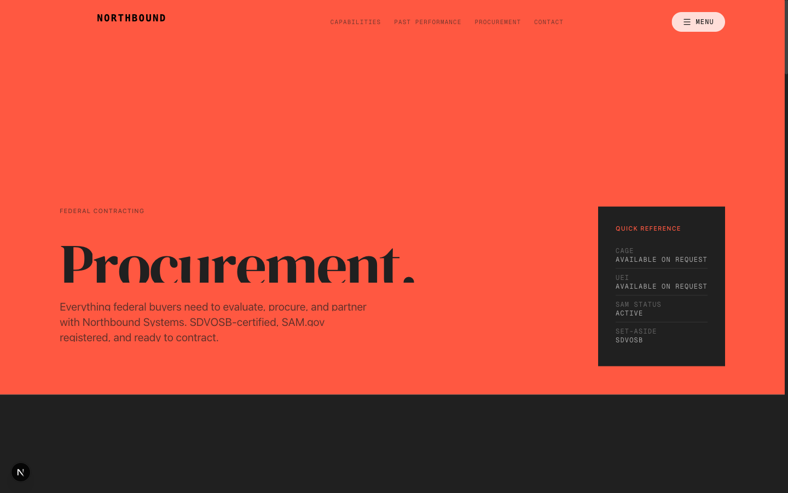
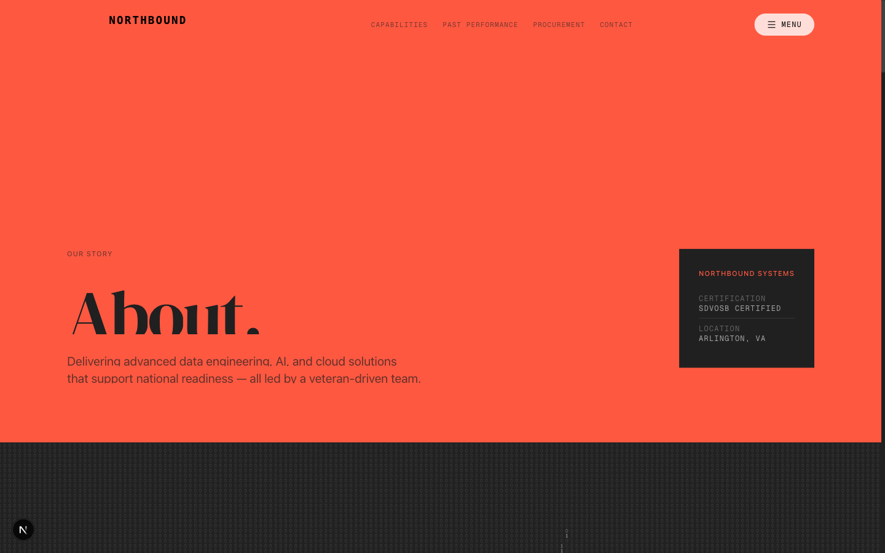

2026 · Direction not taken
Coral Brutalist
A federal data-platform contractor needed a site that read as serious infrastructure rather than another navy-blue government vendor. This direction answers with one saturated coral field, charcoal instrument panels, and headline type set at the full width of the page.
Two things stated plainly. This direction is heavily inspired by the Shift5 marketing site — the three-colour system and the oversized display type come from studying it, and the working files were built against reference captures of it. And because the original was client work, every name, metric, photo, logo and contact detail here has been replaced with an invented company, Northbound Systems. Nothing on these screens describes a real business.

The idea
Most contractors in this space signal trust with navy, gold and a flag. That reads as safe and completely interchangeable. The bet here was the opposite: commit the entire viewport to one aggressive colour, then earn back the seriousness with typography and data density rather than with palette.
- One field, no gradient. Coral is a background, not an accent. Nothing sits on top of it except black type.
- Panels as instruments. The charcoal blocks are framed like readouts — mono labels, status dots, hairline dividers.
- Type at full width. The headline runs edge to edge at a clamp up to 10rem, so the page has one voice and it is loud.
- Mono for everything structural. Labels, stats and eyebrows are monospace; only body copy is sans.
Palette
Three colours, no fourth. Every surface in the build resolves to one of these.


What I would keep
The status panel. It solves the hardest problem on a contractor site — proving current certifications without a wall of badge images — and it does it in a component that stays useful at any width. The full-bleed colour is the part that needs a client with nerve, which is fair enough; it is the reason this one stayed in the cutting room.
Source
Full source is in work/coral-brutalist/ — 28 static routes, builds clean on Next 16. Run it with npm install && npx next dev.